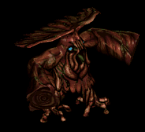
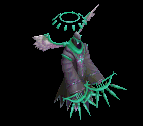

本 をドロップするmob一覧
一覧ページへ
| ミイラ | アンデット | 一般2 | ||||||||
|---|---|---|---|---|---|---|---|---|---|---|
 | 槍(380) | 杖(250) | 状態異常回復1(380) | 腰(210) | 手首(190) | 能力向上2(150) | 本(250) | 箒(380) | ||
| 包帯人間 | アンデット | 一般3 | ||||||||
 | 槍(360) | 杖(240) | 矢(360) | 腰(200) | 手首(180) | 能力向上2(140) | 本(240) | 箒(360) | 魔弾(360) | |
| マミー | アンデット | セミ1 | ||||||||
 | 槍(390) | 杖(260) | 状態異常回復1(390) | 腰(220) | 手首(200) | 能力向上2(160) | 本(260) | 箒(390) | ||
| 死霊魔術師 | アンデット | セミ1 | ||||||||
| 杖(390) | 翼(260) | イベント(390) | グローブ(220) | 冠(200) | ブローチ(200) | 本(390) | 水晶(260) | |||
| レイス | アンデット | セミ2 | ||||||||
 | 杖(420) | 翼(280) | 状態異常回復1(420) | グローブ(230) | 冠(210) | ブローチ(250) | 本(420) | 水晶(280) | ||
| ワイト | アンデット | セミ3 | ||||||||
 | 杖(450) | 投擲(300) | cP回復(450) | グローブ(250) | 冠(230) | ブローチ(300) | 本(450) | |||
| リッチ | アンデット | ボス2 | ||||||||
| 杖(490) | 翼(330) | HP回復(490) | グローブ(270) | 冠(250) | ブローチ(400) | 本(490) | 水晶(330) | |||
| アークリッチ | アンデット | ボス3 | ||||||||
 | 杖(510) | 投擲(340) | 状態異常回復2(130) | グローブ(280) | 冠(260) | ブローチ(500) | 本(510) | |||
| ストラグラー | 人間 | 一般1 | ||||||||
 | 杖(410) | スリング(270) | 弾(410) | 腰(230) | 首(210) | 能力向上2(160) | 本(410) | |||
| 堕落魔法師 | 人間 | 一般3 | ||||||||
 | 杖(360) | スリング(240) | イベント(360) | マント(200) | 首(180) | 能力向上2(140) | 本(360) | |||
| ブラックメイジ | 人間 | 一般4 | ||||||||
 | 杖(300) | スリング(200) | 弾(300) | グローブ(170) | 爪(150) | 宝石(120) | 本(300) | |||
| ソーサラー | 人間 | セミ1 | ||||||||
 | 杖(390) | スリング(260) | 状態異常回復2(100) | 職業鎧(220) | 首(200) | 能力向上2(160) | 本(390) | |||
| ドゥームキャスター | 人間 | ボス1 | ||||||||
 | 杖(470) | スリング(310) | 弾(470) | 兜・帽子(260) | 首(240) | 能力向上2(190) | 本(470) | |||
| キクロップス | 人間 | セミ1 | ||||||||
| スリング(390) | 杖(260) | 弾(390) | 足(220) | 爪(200) | 帰還(160) | 本(260) | ||||
| チタン | 人間 | ボス1 | ||||||||
 | スリング(470) | 杖(310) | 弾(470) | 足(260) | 冠(240) | 帰還(190) | 本(310) | |||
| レッドアイ法術師 | 人間 | ボス1 | ||||||||
 | ステッキ(470) | 杖(310) | 状態異常回復2(120) | マント(260) | 冠(240) | ブローチ(210) | 本(310) | |||
| ピエンド | 悪魔 | 一般1 | ||||||||
 | 鞭(410) | 杖(270) | 状態異常回復1(410) | 腰(230) | 指輪(210) | 十字架(180) | 本(270) | |||
| デーモン | 悪魔 | セミ2 | ||||||||
 | 鞭(420) | 杖(280) | cP回復(420) | 腰(230) | 指輪(210) | 十字架(200) | 本(280) | |||
| サタン | 悪魔 | ボス2 | ||||||||
| 鞭(490) | 杖(330) | 状態異常回復1(490) | 腰(270) | 指輪(250) | 十字架(220) | 本(330) | ||||
| オーガ | 悪魔 | 一般3 | ||||||||
 | 鈍器(360) | 杖(240) | イベント(360) | 鎧(200) | イヤリング(180) | 能力向上1(140) | 本(240) | |||
| オーガチーフ | 悪魔 | セミ1 | ||||||||
 | 鈍器(390) | 杖(260) | 状態異常回復1(390) | 鎧(220) | イヤリング(200) | 能力向上1(160) | 本(260) | |||
| オーガゼネラル | 悪魔 | ボス2 | ||||||||
 | 鈍器(490) | 杖(330) | 状態異常回復2(120) | 鎧(270) | イヤリング(250) | 能力向上1(200) | 本(330) | |||
| ストーンラーバ | 悪魔 | ボス1 | ||||||||
 | none(470) | 杖(310) | 鍵(470) | マント(260) | イヤリング(240) | 宝石(190) | 本(310) | |||
| 淡水亀 | 動物 | 一般1 | ||||||||
 | ステッキ(410) | 杖(270) | 盾(410) | 鎧(230) | 冠(210) | 能力向上2(160) | 本(270) | |||
| ヒュージタートル | 動物 | 一般2 | ||||||||
 | ステッキ(380) | 杖(250) | 状態異常回復2(100) | 鎧(210) | 冠(190) | 能力向上2(150) | 本(250) | |||
| ビッグシェル | 動物 | 一般3 | ||||||||
 | ステッキ(360) | 杖(240) | 盾(360) | 鎧(200) | 冠(180) | 能力向上2(140) | 本(240) | |||
| トライアングル | 動物 | セミ1 | ||||||||
 | ステッキ(390) | 杖(260) | cP回復(390) | 鎧(220) | 冠(200) | 能力向上2(160) | 本(260) | |||
| タートルドラゴン | 動物 | ボス1 | ||||||||
 | ステッキ(470) | 杖(310) | 盾(470) | 鎧(260) | 冠(240) | 能力向上2(190) | 本(310) | |||
| 巨大モグラ | 動物 | 一般4 | ||||||||
 | 鞭(300) | 杖(200) | 状態異常回復2(80) | グローブ(170) | 指輪(150) | 能力向上1(120) | 本(200) | |||
| マインスィーパ | 動物 | セミ2 | ||||||||
 | 鞭(420) | 杖(280) | 弾(420) | グローブ(230) | 指輪(210) | 能力向上1(170) | 本(280) | |||
| フーフー | 神獣 | 一般2 | ||||||||
 | スリング(380) | 杖(250) | 本(250) | |||||||
| 炎鬼 | 神獣 | セミ1 | ||||||||
 | スリング(390) | 杖(260) | 本(260) | |||||||
| ゴーレム | 神獣 | 一般2 | ||||||||
 | 鎌(100) | 両手剣(100) | 杖(250) | 本(250) | ||||||
| クレイゴーレム | 神獣 | 一般3 | ||||||||
 | 鎌(100) | 両手剣(100) | 杖(240) | 本(240) | ||||||
| トランクマン | 神獣 | 一般3 | ||||||||
 | 杖(360) | 鞭(240) | 本(360) | |||||||
| ティンバーマン | 神獣 | 一般4 | ||||||||
 | クロー(200) | 杖(100) | 片手剣(200) | 本(100) | ||||||
| トレント | 神獣 | 一般4 | ||||||||
|  | 鎌(200) | 杖(100) | 両手剣(200) | 本(100) | ||||||
| エンティング | 神獣 | セミ1 | ||||||||
 | 杖(390) | 鈍器(260) | 本(390) | |||||||
| エント | 神獣 | ボス1 | ||||||||
| 箒(310) | 杖(100) | 槍(310) | 本(470) | |||||||
| ミイラEx | アンデット | 一般2 | ||||||||
| 槍(380) | 杖(250) | 状態異常回復1(380) | 腰(210) | 手首(190) | 能力向上2(150) | 本(250) | 箒(380) | ||
| 包帯人間Ex | アンデット | 一般3 | ||||||||
| 槍(360) | 杖(240) | 矢(360) | 腰(200) | 手首(180) | 能力向上2(140) | 本(240) | 箒(360) | 魔弾(360) | |
| マミーEx | アンデット | セミ1 | ||||||||
| 槍(450) | 杖(300) | 状態異常回復1(450) | 腰(250) | 手首(230) | 能力向上2(180) | 本(300) | 箒(450) | ||
| 死霊魔術師Ex | アンデット | セミ1 | ||||||||
| 杖(450) | 翼(300) | イベント(450) | グローブ(250) | 冠(230) | 宝石(180) | 本(450) | 水晶(300) | |||
| レイスEx | アンデット | セミ2 | ||||||||
| 杖(650) | 翼(430) | 状態異常回復1(650) | グローブ(360) | 冠(330) | 宝石(260) | 本(650) | 水晶(430) | ||
| ワイトEx | アンデット | セミ3 | ||||||||
| 杖(800) | 投擲(530) | cP回復(800) | グローブ(440) | 冠(400) | 宝石(320) | 本(800) | |||
| リッチEx | アンデット | ボス2 | ||||||||
| 杖(2000) | 翼(1330) | HP回復(2000) | グローブ(1110) | 冠(1000) | 宝石(800) | 本(2000) | 水晶(1330) | |||
| アークリッチEx | アンデット | ボス3 | ||||||||
| 杖(2800) | 投擲(1870) | 状態異常回復2(700) | グローブ(1560) | 冠(1400) | 宝石(1120) | 本(2800) | |||
| ストラグラーEx | 人間 | 一般1 | ||||||||
| 杖(410) | スリング(270) | 弾(410) | 腰(230) | 首(210) | 能力向上2(160) | 本(410) | |||
| 堕落魔法師Ex | 人間 | 一般3 | ||||||||
| 杖(360) | スリング(240) | イベント(360) | マント(200) | 首(180) | 能力向上2(140) | 本(360) | |||
| ブラックメイジEx | 人間 | 一般4 | ||||||||
| 杖(300) | スリング(200) | 弾(300) | グローブ(170) | 爪(150) | 宝石(120) | 本(300) | |||
| ソーサラーEx | 人間 | セミ1 | ||||||||
| 杖(450) | スリング(300) | 状態異常回復2(110) | 職業鎧(250) | 首(230) | 能力向上2(180) | 本(450) | |||
| ドゥームキャスターEx | 人間 | ボス1 | ||||||||
| 杖(1200) | スリング(800) | 弾(1200) | 兜・帽子(670) | 首(600) | 能力向上2(480) | 本(1200) | |||
| キクロップスEx | 人間 | セミ1 | ||||||||
| スリング(450) | 杖(300) | 弾(450) | 足(250) | 爪(230) | 帰還(180) | 本(300) | ||||
| チタンEx | 人間 | ボス1 | ||||||||
| スリング(1200) | 杖(800) | 弾(1200) | 足(670) | 冠(600) | 帰還(480) | 本(800) | |||
| レッドアイ法術師Ex | 人間 | ボス1 | ||||||||
| ステッキ(1200) | 杖(800) | 状態異常回復2(300) | マント(670) | 冠(600) | ブローチ(210) | 本(800) | |||
| ピエンドEx | 悪魔 | 一般1 | ||||||||
| 鞭(410) | 杖(270) | 状態異常回復1(410) | 腰(230) | 指輪(210) | 十字架(180) | 本(270) | |||
| デーモンEx | 悪魔 | セミ2 | ||||||||
| 鞭(650) | 杖(430) | cP回復(650) | 腰(360) | 指輪(330) | 十字架(200) | 本(430) | |||
| サタンEx | 悪魔 | ボス2 | ||||||||
| 鞭(2000) | 杖(1330) | 状態異常回復1(2000) | 腰(1110) | 指輪(1000) | 十字架(220) | 本(1330) | ||||
| オーガEx | 悪魔 | 一般3 | ||||||||
| 鈍器(360) | 杖(240) | イベント(360) | 鎧(200) | イヤリング(180) | 能力向上1(140) | 本(240) | |||
| オーガチーフEx | 悪魔 | セミ1 | ||||||||
| 鈍器(450) | 杖(300) | 状態異常回復1(450) | 鎧(250) | イヤリング(230) | 能力向上1(180) | 本(300) | |||
| オーガゼネラルEx | 悪魔 | ボス2 | ||||||||
| 鈍器(2000) | 杖(1330) | 状態異常回復2(500) | 鎧(1110) | イヤリング(1000) | 能力向上1(800) | 本(1330) | |||
| ストーンラーバEx | 悪魔 | ボス1 | ||||||||
| none(1200) | 杖(800) | 鍵(550) | マント(670) | イヤリング(600) | 宝石(480) | 本(800) | |||
| 淡水亀Ex | 動物 | 一般1 | ||||||||
| ステッキ(410) | 杖(270) | 盾(410) | 鎧(230) | 冠(210) | 能力向上2(160) | 本(270) | |||
| ヒュージタートルEx | 動物 | 一般2 | ||||||||
| ステッキ(380) | 杖(250) | 状態異常回復2(100) | 鎧(210) | 冠(190) | 能力向上2(150) | 本(250) | |||
| ビッグシェルEx | 動物 | 一般3 | ||||||||
| ステッキ(360) | 杖(240) | 盾(360) | 鎧(200) | 冠(180) | 能力向上2(140) | 本(240) | |||
| トライアングルEx | 動物 | セミ1 | ||||||||
| ステッキ(450) | 杖(300) | cP回復(450) | 鎧(250) | 冠(230) | 能力向上2(180) | 本(300) | |||
| タートルドラゴンEx | 動物 | ボス1 | ||||||||
| ステッキ(1200) | 杖(800) | 盾(1200) | 鎧(670) | 冠(600) | 能力向上2(480) | 本(800) | |||
| 巨大モグラEx | 動物 | 一般4 | ||||||||
| 鞭(300) | 杖(200) | 状態異常回復2(80) | グローブ(170) | 指輪(150) | 能力向上1(120) | 本(200) | |||
| マインスィーパEx | 動物 | セミ2 | ||||||||
| 鞭(650) | 杖(430) | 弾(650) | グローブ(360) | 指輪(330) | 能力向上1(260) | 本(430) | |||
| フーフーEx | 神獣 | 一般2 | ||||||||
| スリング(380) | 杖(250) | 弾(380) | グローブ(210) | 手首(190) | 能力向上2(150) | 本(250) | |||
| 炎鬼Ex | 神獣 | セミ1 | ||||||||
| スリング(450) | 杖(300) | 弾(450) | グローブ(250) | 手首(230) | 能力向上2(180) | 本(300) | |||
| ゴーレムEx | 神獣 | 一般2 | ||||||||
| 両手剣(380) | 杖(250) | 状態異常回復2(100) | 足(210) | 爪(190) | 腕刺青(130) | 鎌(380) | 本(250) | ||
| クレイゴーレムEx | 神獣 | 一般3 | ||||||||
| 両手剣(360) | 杖(240) | 状態異常回復2(90) | 足(200) | 槍投擲機(180) | 腕刺青(140) | 鎌(360) | 本(240) | ||
| トランクマンEx | 神獣 | 一般3 | ||||||||
| 杖(360) | 鞭(240) | イベント(360) | 腰(200) | 指輪(180) | 能力向上1(140) | 本(360) | |||
| ティンバーマンEx | 神獣 | 一般4 | ||||||||
| 杖(300) | 片手剣(200) | HP回復(300) | グローブ(170) | 首(150) | 能力向上1(120) | クロー(200) | 本(300) | ||
| トレントEx | 神獣 | 一般4 | ||||||||
| 杖(300) | 両手剣(200) | cP回復(300) | 腰(170) | 冠(150) | 能力向上1(120) | 鎌(200) | 本(300) | |||
| エンティングEx | 神獣 | セミ1 | ||||||||
| 杖(450) | 鈍器(300) | HP回復(450) | 腰(250) | イヤリング(230) | 能力向上1(180) | 本(450) | |||
| エントEx | 神獣 | ボス1 | ||||||||
| 杖(1200) | 槍(800) | cP回復(1200) | 腰(670) | イヤリング(600) | 能力向上1(480) | 本(1200) | 箒(800) | |||
| ミイラZin | アンデット | 一般2 | ||||||||
| 槍(1380) | 杖(920) | 状態異常回復1(1380) | 腰(770) | 手首(690) | 能力向上2(550) | 本(920) | 箒(1380) | ||
| 包帯人間Zin | アンデット | 一般3 | ||||||||
| 槍(1560) | 杖(1040) | 矢(1560) | 腰(870) | 手首(780) | 能力向上2(620) | 本(1040) | 箒(1560) | 魔弾(1560) | |
| マミーZin | アンデット | セミ1 | ||||||||
| 槍(650) | 杖(430) | 状態異常回復1(650) | 腰(360) | 手首(330) | 能力向上2(260) | 本(430) | 箒(650) | ||
| 死霊魔術師Zin | アンデット | セミ1 | ||||||||
| 杖(650) | 翼(430) | イベント(650) | グローブ(360) | 冠(330) | 宝石(260) | 本(650) | 水晶(430) | |||
| レイスZin | アンデット | セミ2 | ||||||||
| 杖(750) | 翼(500) | 状態異常回復1(750) | グローブ(420) | 冠(380) | 宝石(300) | 本(750) | 水晶(500) | ||
| ワイトZin | アンデット | セミ3 | ||||||||
| 杖(900) | 投擲(600) | cP回復(900) | グローブ(500) | 冠(450) | 宝石(360) | 本(900) | |||
| リッチZin | アンデット | ボス2 | ||||||||
| 杖(1100) | 翼(730) | HP回復(1100) | グローブ(610) | 冠(550) | 宝石(440) | 本(1100) | 水晶(730) | |||
| アークリッチZin | アンデット | ボス3 | ||||||||
| 杖(1200) | 投擲(800) | 状態異常回復2(300) | グローブ(670) | 冠(600) | 宝石(480) | 本(1200) | |||
| ストラグラーZin | 人間 | 一般1 | ||||||||
| 杖(1210) | スリング(810) | 弾(1210) | 腰(670) | 首(610) | 能力向上2(480) | 本(1210) | |||
| 堕落魔法師Zin | 人間 | 一般3 | ||||||||
| 杖(1560) | スリング(1040) | イベント(1560) | マント(870) | 首(780) | 能力向上2(620) | 本(1560) | |||
| ブラックメイジZin | 人間 | 一般4 | ||||||||
| 杖(1200) | スリング(800) | 弾(1200) | グローブ(670) | 爪(600) | 宝石(480) | 本(1200) | |||
| ソーサラーZin | 人間 | セミ1 | ||||||||
| 杖(650) | スリング(430) | 状態異常回復2(160) | 職業鎧(360) | 首(330) | 能力向上2(260) | 本(650) | |||
| ドゥームキャスターZin | 人間 | ボス1 | ||||||||
| 杖(1000) | スリング(670) | 弾(1000) | 兜・帽子(560) | 首(500) | 能力向上2(400) | 本(1000) | |||
| キクロップスZin | 人間 | セミ1 | ||||||||
| スリング(650) | 杖(430) | 弾(650) | 足(360) | 爪(330) | 帰還(260) | 本(430) | ||||
| チタンZin | 人間 | ボス1 | ||||||||
| スリング(1000) | 杖(670) | 弾(1000) | 足(560) | 冠(500) | 帰還(400) | 本(670) | |||
| レッドアイ法術師Zin | 人間 | ボス1 | ||||||||
| ステッキ(1000) | 杖(670) | 状態異常回復2(250) | マント(560) | 冠(500) | ブローチ(210) | 本(670) | |||
| ピエンドZin | 悪魔 | 一般1 | ||||||||
| 鞭(1210) | 杖(810) | 状態異常回復1(1210) | 腰(670) | 指輪(610) | 十字架(180) | 本(810) | |||
| デーモンZin | 悪魔 | セミ2 | ||||||||
| 鞭(750) | 杖(500) | cP回復(750) | 腰(420) | 指輪(380) | 十字架(200) | 本(500) | |||
| サタンZin | 悪魔 | ボス2 | ||||||||
| 鞭(1100) | 杖(730) | 状態異常回復1(1100) | 腰(610) | 指輪(550) | 十字架(220) | 本(730) | ||||
| オーガZin | 悪魔 | 一般3 | ||||||||
| 鈍器(1560) | 杖(1040) | イベント(1560) | 鎧(870) | イヤリング(780) | 能力向上1(620) | 本(1040) | |||
| オーガチーフZin | 悪魔 | セミ1 | ||||||||
| 鈍器(650) | 杖(430) | 状態異常回復1(650) | 鎧(360) | イヤリング(330) | 能力向上1(260) | 本(430) | |||
| オーガゼネラルZin | 悪魔 | ボス2 | ||||||||
| 鈍器(1100) | 杖(730) | 状態異常回復2(280) | 鎧(610) | イヤリング(550) | 能力向上1(440) | 本(730) | |||
| ストーンラバーZin | 悪魔 | ボス1 | ||||||||
 | none(1000) | 杖(670) | 鍵(1000) | マント(560) | イヤリング(500) | 宝石(400) | 本(670) | |||
| 淡水亀Zin | 動物 | 一般1 | ||||||||
| ステッキ(1210) | 杖(810) | 盾(1210) | 鎧(670) | 冠(610) | 能力向上2(480) | 本(810) | |||
| ヒュージタートルZin | 動物 | 一般2 | ||||||||
| ステッキ(1380) | 杖(920) | 状態異常回復2(350) | 鎧(770) | 冠(690) | 能力向上2(550) | 本(920) | |||
| ビッグシェルZin | 動物 | 一般3 | ||||||||
| ステッキ(1560) | 杖(1040) | 盾(1560) | 鎧(870) | 冠(780) | 能力向上2(620) | 本(1040) | |||
| トライアングルZin | 動物 | セミ1 | ||||||||
| ステッキ(650) | 杖(430) | cP回復(650) | 鎧(360) | 冠(330) | 能力向上2(260) | 本(430) | |||
| タートルドラゴンZin | 動物 | ボス1 | ||||||||
| ステッキ(1000) | 杖(670) | 盾(1000) | 鎧(560) | 冠(500) | 能力向上2(400) | 本(670) | |||
| 巨大モグラZin | 動物 | 一般4 | ||||||||
| 鞭(1200) | 杖(800) | 状態異常回復2(300) | グローブ(670) | 指輪(600) | 能力向上1(480) | 本(800) | |||
| マインスィーパZin | 動物 | セミ2 | ||||||||
| 鞭(750) | 杖(500) | 弾(750) | グローブ(420) | 指輪(380) | 能力向上1(300) | 本(500) | |||
| フーフーZin | 神獣 | 一般2 | ||||||||
| スリング(1380) | 杖(920) | 弾(1380) | グローブ(770) | 手首(690) | 能力向上2(550) | 本(920) | |||
| 炎鬼Zin | 神獣 | セミ1 | ||||||||
| スリング(650) | 杖(430) | 弾(650) | グローブ(360) | 手首(330) | 能力向上2(260) | 本(430) | |||
| ゴーレムZin | 神獣 | 一般2 | ||||||||
| 両手剣(1380) | 杖(920) | 状態異常回復2(350) | 足(770) | 爪(690) | 腕刺青(130) | 鎌(1380) | 本(920) | ||
| クレイゴーレムZin | 神獣 | 一般3 | ||||||||
| 両手剣(1560) | 杖(1040) | 状態異常回復2(390) | 足(870) | 槍投擲機(780) | 腕刺青(140) | 鎌(1560) | 本(1040) | ||
| トランクマンZin | 神獣 | 一般3 | ||||||||
| 杖(1560) | 鞭(1040) | イベント(1560) | 腰(870) | 指輪(780) | 能力向上1(620) | 本(1560) | |||
| ティンバーマンZin | 神獣 | 一般4 | ||||||||
| 杖(1200) | 片手剣(800) | HP回復(1200) | グローブ(670) | 首(600) | 能力向上1(480) | クロー(800) | 本(1200) | ||
| トレントZin | 神獣 | 一般4 | ||||||||
| 杖(1200) | 両手剣(800) | cP回復(1200) | 腰(670) | 冠(600) | 能力向上1(480) | 鎌(800) | 本(1200) | |||
| エンティングZin | 神獣 | セミ1 | ||||||||
| 杖(650) | 鈍器(430) | HP回復(650) | 腰(360) | イヤリング(330) | 能力向上1(260) | 本(650) | |||
| エントZin | 神獣 | ボス1 | ||||||||
| 杖(1000) | 槍(670) | cP回復(1000) | 腰(560) | イヤリング(500) | 能力向上1(400) | 本(1000) | 箒(670) | |||
 | 弓(1560) | 片手剣(1040) | 矢(1560) | グローブ(900) | 手首(780) | 腕刺青(170) | クロー(1040) | 銃(1560) | 魔弾(1560) | |
| ジャイアント骸骨1 Zin | アンデット | セミ1 | ||||||||
 | 冠(50) | 鈍器(90) | 牙(160) | 職業鎧(230) | 状態異常回復1(300) | 杖(350) | 本(350) | 双剣(160) | ||
| ジャイアント骸骨3 Zin | アンデット | ボス1 | ||||||||
 | 冠(150) | 宝石(250) | 十字架(450) | 十字架(650) | ステッキ(850) | 杖(1000) | 本(1000) | |||
| ジャイアント骸骨4 Zin | アンデット | ボス2 | ||||||||
 | 杖(270) | マント(450) | 牙(810) | 職業鎧(1170) | 肩刺青(1530) | 杖(1800) | 本(270) | 双剣(810) | ||
| バイキングヘッド1 Zin | アンデット | セミ2 | ||||||||
 | 冠(80) | 状態異常回復2(140) | 腕刺青(250) | 十字架(360) | ステッキ(470) | 杖(550) | 本(550) | |||
| バイキングヘッド3 Zin | アンデット | ボス2 | ||||||||
 | 能力向上2(270) | 鈍器(450) | 牙(810) | 職業鎧(1170) | ステッキ(1530) | 杖(1800) | 本(1800) | 双剣(810) | ||
| バイキングヘッド4 Zin | アンデット | ボス3 | ||||||||
| 冠(360) | cP回復(600) | 宝石(1080) | 職業鎧(1560) | ステッキ(2040) | 杖(2400) | 本(2400) | ||||
| デスマスク Zin | アンデット | セミ1 | ||||||||
 | 宝石(50) | 宝石(90) | 牙(160) | 職業鎧(230) | 肩刺青(300) | 杖(350) | 本(350) | 双剣(160) | ||
| デスマスク1 Zin | アンデット | セミ3 | ||||||||
| 職業鎧(110) | 職業鎧(180) | 腕刺青(320) | 十字架(460) | ステッキ(600) | 杖(700) | 本(700) | ||||
| デスマスク4 Zin | アンデット | ボス3 | ||||||||
 | 冠(360) | 鈍器(600) | 牙(1080) | 職業鎧(1560) | ステッキ(2040) | 杖(2400) | 本(2400) | 双剣(1080) | ||
| アンデッド魔法師1 Zin | アンデット | 一般4 | ||||||||
 | 指輪(30) | マント(50) | 杖(90) | 能力向上1(130) | 矢(170) | グローブ(200) | 本(90) | 魔弾(170) | 魔弾(170) | |
| アンデッドメイジ3 Zin | アンデット | ボス2 | ||||||||
| 能力向上2(270) | マント(450) | 杖(810) | 能力向上1(1170) | 矢(1530) | 杖(1800) | 本(810) | 魔弾(1530) | |||
| アンデッドロック4 Zin | アンデット | ボス3 | ||||||||
 | 指輪(360) | マント(600) | 腕刺青(1080) | 手首(1560) | 矢(2040) | 杖(2400) | 本(2400) | 魔弾(2040) | ||
| ハイエルフ3 Zin | 人間 | ボス1 | ||||||||
 | 片手剣(250) | イヤリング(750) | 足(500) | 槍(400) | 状態異常回復1(100) | 杖(150) | クロー(250) | 本(150) | 箒(400) | |
| シーク守護者3 Zin | 人間 | ボス2 | ||||||||
 | 鎧(450) | 首(1350) | 杖(900) | 手首(720) | 両手剣(180) | HP回復(270) | 鎌(180) | 本(900) | ||
| 逃亡魔法師1 Zin | 人間 | 一般4 | ||||||||
| 両手剣(50) | ブローチ(150) | cP回復(100) | 職業鎧(80) | 状態異常回復1(20) | 杖(30) | 鎌(50) | 本(30) | |||
| ゴールデンマスク1 Zin | 悪魔 | セミ2 | ||||||||
 | 能力向上2(360) | 爪(440) | 帰還(180) | 鞭(110) | 肩刺青(60) | 杖(30) | 本(30) | |||
| 邪臣1 Zin | 悪魔 | セミ2 | ||||||||
 | 指輪(360) | 首(440) | 両手剣(180) | 能力向上1(110) | 状態異常回復1(60) | 杖(30) | 鎌(180) | 本(30) | ||
| 邪臣3 Zin | 悪魔 | ボス2 | ||||||||
 | 指輪(1170) | 職業鎧(1440) | 帰還(590) | 手首(360) | 杖(180) | イベント(90) | 本(180) | |||
| パンタズドリーム Zin | 悪魔 | セミ1 | ||||||||
| 鎧(230) | ブローチ(280) | 足(120) | 笛(70) | ステッキ(40) | 杖(20) | 本(20) | ||||
| ルーンモンキー Zin | 動物 | ボス1 | ||||||||
 | 杖(350) | イヤリング(250) | 牙(200) | 職業鎧(150) | 矢(100) | HP回復(50) | 本(350) | 双剣(200) | 魔弾(100) | |
| ウィングコング1 Zin | 動物 | セミ2 | ||||||||
 | 杖(190) | イヤリング(140) | 能力向上2(110) | 職業鎧(80) | 矢(60) | 翼(30) | 本(190) | 水晶(30) | 魔弾(60) | |
| 蛙 Zin | 動物 | 一般4 | ||||||||
 | 鍵(70) | ブローチ(50) | 弾(40) | 槍(30) | 槍投擲機(20) | 杖(10) | 本(10) | 箒(30) | ||
| 蛙2 Zin | 動物 | セミ3 | ||||||||
 | 投擲(250) | 状態異常回復2(180) | 足(140) | 鎧(110) | 槍投擲機(70) | 杖(40) | 本(40) | |||
| 蛙4 Zin | 動物 | ボス3 | ||||||||
 | 投擲(840) | 爪(600) | 足(480) | 槍(360) | 槍投擲機(240) | 杖(120) | 本(120) | 箒(360) | ||
| ラジエータカエル1 Zin | 動物 | セミ2 | ||||||||
 | 鍵(190) | 爪(140) | 足(110) | 槍(80) | 槍投擲機(60) | 杖(30) | 本(30) | 箒(80) | ||
| ラジエータカエル3 Zin | 動物 | ボス2 | ||||||||
 | 投擲(630) | ブローチ(450) | 足(360) | 槍(270) | 槍投擲機(180) | 杖(90) | 本(90) | 箒(270) | ||
| ラジエータカエル4 Zin | 動物 | ボス3 | ||||||||
| 鍵(840) | 爪(600) | 帰還(480) | 槍(360) | 槍投擲機(240) | 杖(120) | 本(120) | 箒(360) | |||
| ハリネズミカエル Zin | 動物 | セミ1 | ||||||||
 | 投擲(120) | 爪(90) | 十字架(70) | 腕刺青(50) | 槍投擲機(40) | 杖(20) | 本(20) | |||
| ハリネズミカエル2 Zin | 動物 | セミ3 | ||||||||
 | 投擲(250) | 爪(180) | 足(140) | 槍(110) | 肩刺青(70) | 杖(40) | 本(40) | 箒(110) | ||
| ハリネズミカエル4 Zin | 動物 | ボス3 | ||||||||
| 投擲(840) | 爪(600) | cP回復(480) | cP回復(360) | 槍投擲機(240) | 杖(120) | 本(120) | ||||
| ラジエータカメ Zin | 動物 | 一般4 | ||||||||
 | 冠(70) | 状態異常回復2(50) | 帰還(40) | 鞭(30) | 弓(20) | 杖(10) | 本(10) | 銃(20) | ||
| ラジエータカメ4 Zin | 動物 | ボス3 | ||||||||
 | 杖(840) | 鈍器(600) | 弾(480) | 十字架(360) | 弓(240) | 盾(120) | 本(840) | 銃(240) | ||
| ペガサス1 Zin | 神獣 | セミ1 | ||||||||
 | 杖(160) | ブローチ(230) | 牙(120) | 槍(20) | 弓(40) | 翼(90) | 本(160) | 箒(20) | 双剣(120) | 水晶(90) |
| ブルーウイング1 Zin | 神獣 | セミ2 | ||||||||
| 杖(250) | 状態異常回復2(360) | 牙(190) | 槍(30) | 弓(60) | 翼(140) | 本(250) | 箒(30) | 双剣(190) | 水晶(140) | |
| 審判官2 Zin | 神獣 | セミ3 | ||||||||
|  | 杖(320) | 鈍器(460) | 杖(250) | 能力向上1(40) | 矢(70) | 盾(180) | 本(320) | 魔弾(70) | ||
| 泥棒 | 人間 | 一般1 | ||||||||
| 杖(410) | スリング(270) | 弾(410) | 腰(230) | 首(210) | 能力向上2(160) | 本(410) | |||
| 堕落魔術師 | 人間 | 一般3 | ||||||||
| 杖(360) | スリング(240) | イベント(360) | マント(200) | 首(180) | 能力向上2(140) | 本(360) | |||
| 黒魔術師 | 人間 | 一般4 | ||||||||
| 杖(300) | スリング(200) | 弾(300) | グローブ(170) | 爪(150) | 宝石(120) | 本(300) | |||
| 魔術師 | 人間 | セミ1 | ||||||||
| 杖(390) | スリング(260) | 状態異常回復2(100) | 職業鎧(220) | 首(200) | 能力向上2(160) | 本(390) | |||
| 破壊術師 | 人間 | ボス1 | ||||||||
| 杖(470) | スリング(310) | 弾(470) | 兜・帽子(260) | 首(240) | 能力向上2(190) | 本(470) | |||
| 泥棒 Ex | 人間 | 一般1 | ||||||||
| 杖(410) | スリング(270) | 弾(410) | 腰(230) | 首(210) | 能力向上2(160) | 本(410) | |||
| 堕落魔術師 Ex | 人間 | 一般3 | ||||||||
| 杖(360) | スリング(240) | イベント(360) | マント(200) | 首(180) | 能力向上2(140) | 本(360) | |||
| 黒魔術師 Ex | 人間 | 一般4 | ||||||||
| 杖(300) | スリング(200) | 弾(300) | グローブ(170) | 爪(150) | 宝石(120) | 本(300) | |||
| 魔術師 Ex | 人間 | セミ1 | ||||||||
| 杖(450) | スリング(300) | 状態異常回復2(110) | 職業鎧(250) | 首(230) | 能力向上2(180) | 本(450) | |||
| 破壊術師 Ex | 人間 | ボス1 | ||||||||
| 杖(1200) | スリング(800) | 弾(1200) | 兜・帽子(670) | 首(600) | 能力向上2(480) | 本(1200) | |||
| レッドアイ大術師 | 人間 | ボス1 | ||||||||
| ステッキ(470) | 杖(310) | 状態異常回復2(120) | マント(260) | 冠(240) | ブローチ(210) | 本(310) | |||
| レッドアイ大術師 Ex | 人間 | ボス1 | ||||||||
| ステッキ(1200) | 杖(800) | 状態異常回復2(300) | マント(670) | 冠(600) | ブローチ(210) | 本(800) | |||
| ワニ亀 | 動物 | 一般1 | ||||||||
| ステッキ(410) | 杖(270) | 盾(410) | 鎧(230) | 冠(210) | 能力向上2(160) | 本(270) | |||
| 象亀 | 動物 | 一般2 | ||||||||
| ステッキ(380) | 杖(250) | 状態異常回復2(100) | 鎧(210) | 冠(190) | 能力向上2(150) | 本(250) | |||
| 鎧亀 | 動物 | 一般3 | ||||||||
| ステッキ(360) | 杖(240) | 盾(360) | 鎧(200) | 冠(180) | 能力向上2(140) | 本(240) | |||
| 神秘の亀 | 動物 | セミ1 | ||||||||
| ステッキ(390) | 杖(260) | cP回復(390) | 鎧(220) | 冠(200) | 能力向上2(160) | 本(260) | |||
| 竜王亀 | 動物 | ボス1 | ||||||||
| ステッキ(470) | 杖(310) | 盾(470) | 鎧(260) | 冠(240) | 能力向上2(190) | 本(310) | |||
| ワニ亀 Ex | 動物 | 一般1 | ||||||||
| ステッキ(410) | 杖(270) | 盾(410) | 鎧(230) | 冠(210) | 能力向上2(160) | 本(270) | |||
| 象亀 Ex | 動物 | 一般2 | ||||||||
| ステッキ(380) | 杖(250) | 状態異常回復2(100) | 鎧(210) | 冠(190) | 能力向上2(150) | 本(250) | |||
| 鎧亀 Ex | 動物 | 一般3 | ||||||||
| ステッキ(360) | 杖(240) | 盾(360) | 鎧(200) | 冠(180) | 能力向上2(140) | 本(240) | |||
| 神秘の亀 Ex | 動物 | セミ1 | ||||||||
| ステッキ(450) | 杖(300) | cP回復(450) | 鎧(250) | 冠(230) | 能力向上2(180) | 本(300) | |||
| 竜王亀 Ex | 動物 | ボス1 | ||||||||
| ステッキ(1200) | 杖(800) | 盾(1200) | 鎧(670) | 冠(600) | 能力向上2(480) | 本(800) | |||
| ベイシャゴーレム | 神獣 | 一般2 | ||||||||
| 鎌(100) | 両手剣(100) | 杖(250) | 本(250) | ||||||
| 泥ゴーレム | 神獣 | 一般3 | ||||||||
| 鎌(100) | 両手剣(100) | 杖(240) | 本(240) | ||||||
| ベイシャゴーレム Ex | 神獣 | 一般2 | ||||||||
| 両手剣(380) | 杖(250) | 状態異常回復2(100) | 足(210) | 爪(190) | 腕刺青(130) | 鎌(380) | 本(250) | ||
| 泥ゴーレム Ex | 神獣 | 一般3 | ||||||||
| 両手剣(360) | 杖(240) | 状態異常回復2(90) | 足(200) | 槍投擲機(180) | 腕刺青(140) | 鎌(360) | 本(240) | ||
| フロッグ Zin | 動物 | 一般4 | ||||||||
| 鍵(70) | ブローチ(50) | 弾(40) | 槍(30) | 槍投擲機(20) | 杖(10) | 本(10) | 箒(30) | ||
| 時の苗木 Zin | 神獣 | セミ1 | ||||||||
| 杖(1560) | 鞭(1040) | イベント(1560) | 腰(870) | 指輪(780) | 能力向上1(620) | 本(1560) | |||
| 時の木 Zin | 神獣 | セミ1 | ||||||||
| 杖(1200) | 片手剣(800) | HP回復(1200) | グローブ(670) | 首(600) | 能力向上1(480) | クロー(800) | 本(1200) | ||
| 時の大樹 Zin | 神獣 | セミ1 | ||||||||
| 杖(1200) | 両手剣(800) | cP回復(1200) | 腰(670) | 冠(600) | 能力向上1(480) | 鎌(800) | 本(1200) | |||
| 時の老樹 Zin | 神獣 | セミ1 | ||||||||
| 杖(650) | 鈍器(430) | HP回復(650) | 腰(360) | イヤリング(330) | 能力向上1(260) | 本(650) | |||
| フロッグ Zin | 動物 | 一般4 | ||||||||
| 鍵(70) | ブローチ(50) | 弾(40) | 槍(30) | 槍投擲機(20) | 杖(10) | 本(10) | 箒(30) | ||
| オーガEv | 悪魔 | 一般3 | ||||||||
| 鈍器(1560) | 杖(1040) | イベント(1560) | 鎧(870) | イヤリング(780) | 能力向上1(620) | 本(1040) | |||
| ビッグシェルEv | 動物 | 一般3 | ||||||||
| ステッキ(1560) | 杖(1040) | 盾(1560) | 鎧(870) | 冠(780) | 能力向上2(620) | 本(1040) | |||
| クレイゴーレムEv | 神獣 | 一般3 | ||||||||
| 両手剣(1560) | 杖(1040) | 状態異常回復2(390) | 足(870) | 槍投擲機(780) | 腕刺青(140) | 鎌(1560) | 本(1040) | ||
| 包帯人間Ev | アンデット | 一般3 | ||||||||
| 槍(1560) | 杖(1040) | 矢(1560) | 腰(870) | 手首(780) | 能力向上2(620) | 本(1040) | 箒(1560) | 魔弾(1560) | |
| トランクマンEv | 神獣 | 一般3 | ||||||||
| 杖(1560) | 鞭(1040) | イベント(1560) | 腰(870) | 指輪(780) | 能力向上1(620) | 本(1560) | |||
| 堕落魔法師Ev | 人間 | 一般3 | ||||||||
| 杖(1560) | スリング(1040) | イベント(1560) | マント(870) | 首(780) | 能力向上2(620) | 本(1560) | |||
| ブラックメイジEv | 人間 | 一般4 | ||||||||
| 杖(1200) | スリング(800) | 弾(1200) | グローブ(670) | 爪(600) | 宝石(480) | 本(1200) | |||
| トレントEv | 神獣 | 一般4 | ||||||||
| 杖(1200) | 両手剣(800) | cP回復(1200) | 腰(670) | 冠(600) | 能力向上1(480) | 鎌(800) | 本(1200) | |||
| キクロップスEv | 人間 | セミ1 | ||||||||
| スリング(650) | 杖(430) | 弾(650) | 足(360) | 爪(330) | 帰還(260) | 本(430) | ||||
| トライアングルEv | 動物 | セミ1 | ||||||||
| ステッキ(650) | 杖(430) | cP回復(650) | 鎧(360) | 冠(330) | 能力向上2(260) | 本(430) | |||
| マインスィーパEv | 動物 | セミ2 | ||||||||
| 鞭(750) | 杖(500) | 弾(750) | グローブ(420) | 指輪(380) | 能力向上1(300) | 本(500) | |||
| アークリッチEv | アンデット | ボス3 | ||||||||
| 杖(1200) | 投擲(800) | 状態異常回復2(300) | グローブ(670) | 冠(600) | 宝石(480) | 本(1200) | |||
| 古代悪魔Sp | 悪魔 | セミ1 | ||||||||
 | 指輪(1500) | ブローチ(700) | 職業鎧(1000) | 十字架(100) | 弓(300) | 冠(1000) | 本(700) | 銃(300) | ||
| ラジエータカエル1 Sp | 動物 | 一般4 | ||||||||
| 鍵(200) | 爪(500) | 足(700) | 槍(1100) | 槍投擲機(600) | 杖(800) | 本(1100) | 箒(1100) | |||
| ハリネズミカエル4 Sp | 動物 | 一般4 | ||||||||
| 投擲(840) | 爪(600) | cP回復(500) | 槍投擲機(300) | 杖(100) | 本(200) | |||||
| 淡水亀Sp | 動物 | 一般4 | ||||||||
| ステッキ(700) | 杖(600) | 盾(500) | 鎧(900) | 冠(500) | 能力向上2(400) | 本(700) | |||
| ワイトSp | アンデット | セミ1 | ||||||||
| 杖(700) | 翼(400) | イベント(600) | グローブ(400) | 冠(300) | 宝石(300) | 本(700) | 水晶(400) | ||
| ピエンドSp | 悪魔 | 一般4 | ||||||||
| 鞭(1200) | 杖(800) | 状態異常回復1(1200) | 腰(700) | 指輪(600) | 十字架(200) | 本(800) | ||||
| デーモンSp | 悪魔 | セミ1 | ||||||||
| 鞭(750) | 杖(500) | cP回復(750) | 腰(400) | 指輪(400) | 十字架(200) | 本(500) |